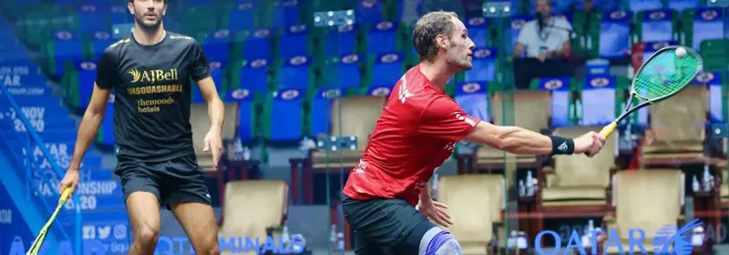

5 Things To Try On Your Bad Days
We all have our bad days. Days when no matter how hard we try, we just seem to play worse. Here are some things to try to break that spell.
It happens to every player at some point: you play badly. Perhaps you know the reason – maybe a tough training session the day before, maybe a little night with friends, maybe a stressful day at work or study. many times, there doesn’t seem to be an obvious reason.
In this article, I am going to give you 5 things for you to concentrate on and one of those things should help. Each day you play badly, progress through the list to see what works best on that day. Don’t think you will find one solution for each time you play badly – it doesn’t seem to work like that for most people.
One last point before we start. I make no guarantees that they will work. Sometimes we suck and we just have to try our best and accept it. I have embedded the video version of this article and the bottom of the page.
Number 0: Watch The Ball
I’ve called this number 0 because this is something we should be doing all the time anyway. However, I have observed that one of the first things to check is whether you are watching the ball as it hits your strings. It’s a habit that needs to be formed and is easy to forget during tough matches. It will ensure you strike the ball better, with more power and control. keep you head still for a moment after you hit it to ensure you are balanced.
Number 1: The Racket Butt
In the video below, I tape a little laser to the butt of the racket to show where my racket is pointing. I don’t expect you to do that, but I do suggest become more aware of where and in what direction the butt of the racket is when preparing to swing. The more consistent you are with that preparation, the more consistent your shots will be. You need to find the right position for you. You can start by copying mine and seeing if it works for you. if not, then make some adjustments.
Number 2: The Upper Arm
I often find that amateur players’ upper arm is forgotten in favour of the wrist or racket head. Professional squash players can generate a lot of power just with their forearm, but amateurs generally need to use the strongest part of the arm and that’s the upper arm (from elbow to shoulder). Becoming more conscious of what this part of your body is doing may highlight the lack of movement in it.
Number 3: The Point of Contact
I’ve already mentioned watching the ball hit you strings in number 0, but this one is about becoming aware of “where” you hit the ball, both in terms of in relation to your knee AND with regard to the part of the ball you hit. If you hit the ball a fraction of a second too early, it will come back towards you and make hitting straight drives risky. If you hit the ball a fraction of a second too late, it will go away from you and potentially touch the side wall, slow down and give your opponent and easy shot.

Number 4: The Follow Through
To be clear, I am not asking you to have a big or full follow through. I just want you to become aware of where it finishes. Even though the follow through is after you have hit the ball, it signifies what happened when you swung. If the racket head finishes low, there’s a good chance so will the ball. if the follow through is too short, it might indicate you are “pulling” the shot and not letting your body do the work, and if it is too big, then maybe you are a little dangerous and also lack swing control.
Number 5: The Front Wall
This is a direct target. Compare that with the floor, which is an indirect target. Paying attention tot he front wall can expose issues with your aiming. Can’t expect to hit the ball deep if the shot is hitting the front wall too low! A lot depends on WHERE you are hitting you shots from, but the height the ball hits the front wall is a great indicator of length. In addition tot he video below, I also recommend watching my Learn To Hit The Ball Tight video.
Final Thoughts
Accept that some days you will play badly, and many times for no obvious reason. Accepting it, doesn’t mean doing nothing about it though. Sometimes it’s because we need to focus on one aspect of our stroke production and the 5 (6 really) ideas above are a good starting point to play better that day.